Rapid Prototyping on Google App Engine - Easily Extend your Python ML Models into Interactive Web Applications - Trip Planner with Google Maps and Yelp
Practical walkthroughs on machine learning, data exploration and finding insight.
On YouTube:

Let's build a web application to map out trips and plot specific businesses along the route every fifty miles or so using Yelp and Google App Engine. Here is an example traveling from Portland, Oregon all the way to Boise, Idaho while being within 50 miles of a florist at all times - just in time for Valentine's day! You can click on each marker on the map to get the business name and rating.

Prototyping your machine-learning models into web applications is a critical topic for most data scientists. There are plenty of resources to transition developers into data scientists but few on helping data scientists acquire full-ops development skills. For some, this may not be an issue as they either rely on outside help, or they have no desire in bringing products to market. For the rest of us, especially the data scientist with some entrepreneurial aspirations, there are some easy-to-acquire skills and tools to enable extending ideas into web applications on the cheap.
I have posted on this topic in the past using tools like:
- Amazon Web Services: Going from an Idea to a Pitch: Hosting your Python Application using Flask and Amazon Web Services (AWS)
- PythonAnywhere: Life Coefficients - Modeling Life Expectancy and Prototyping it on the Web with Flask and PythonAnywhere
In this walk-through, I'll show you how to extend a scripted python program into a fully interactive web application using Google App Engine. This platform is a no-hassle and cost effective option for easy and reliable web hosting.
Google App Engine
According to Wikipedia:Google App Engine (often referred to as GAE or simply App Engine) is a web framework and cloud computing platform for developing and hosting web applications in Google-managed data centers. Applications are sandboxed and run across multiple servers.[1] App Engine offers automatic scaling for web applications—as the number of requests increases for an application, App Engine automatically allocates more resources for the web application to handle the additional demand.[2]
The Google App Engine is serverless so you don't have to think about any of the hardware behind your web application. You don't have to know what OS your application is running under, it will scale accordingly, Google will take care of security patches, and you only pay for what you consume. If you are looking for a hands-off web hosting option, this may be it. I will write a post on Amazon's AWS Lambda shortly to compare services. There are two types of App Engines you can opt for - one is very simple but less customizable, while the other isn't. We'll stick to the simple one - Standard Environment.
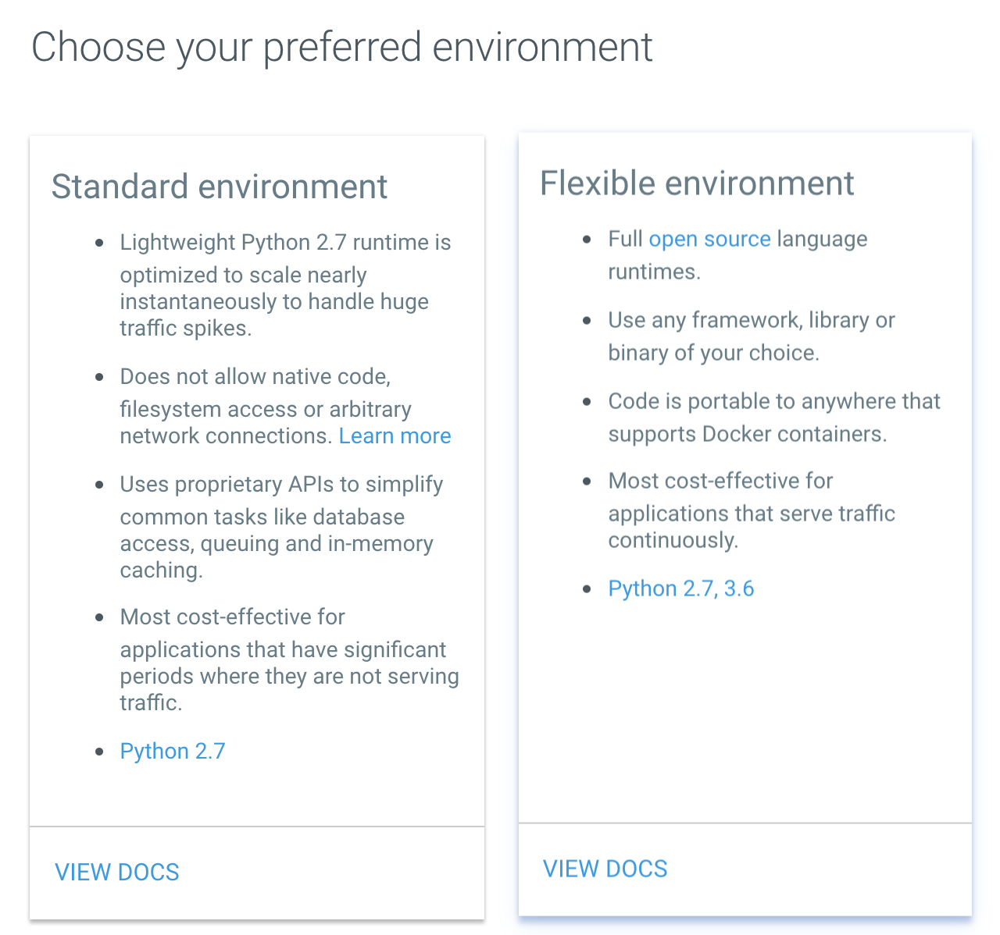
A Python Starting Script
The impetus behind rapid prototyping is that you have a stand-alone python script (or at the very least an idea your can accomplish in Python) that you would like to turn into an interactive tool accessible by anybody with a web browser. Here, we will extend the core idea behind my previous blog post Yelp v3 and a Romantic Trip Across the USA, One Florist at a Time. We're going to extend it to the web and add an interactive UI so the user can select departure, destination and business to track along the trip path. The querying engine will still be the Yelp API but the results will be displayed on Google Maps with markers.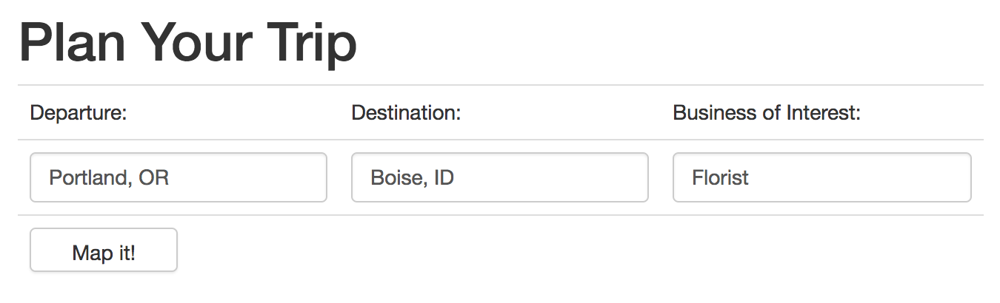
Let's Code
The full source-code can be found on GitHub: github.com/amunategui/rapid-prototyping-app-engine-yelp. But before you start copying and pasting, I'll show you a neat way of importing the GitHub repo into Google Cloud Platform (GCP) and get a web application up-and-running in minutes. To see this in action, check out the my video walk-through - ADD VIDEO LINKPrerequisites
- Google Prerequisites:In order to host on Google Cloud, you will need to get a Google Cloud account and you will need to create a free Google Maps API Key.
- Yelp Prerequisites You will also need a free Yelp API key. First sign up for a free account on Yelp then get a free Yelp developer API key.
Python, Flask, Bootstrap, JavaScript and Ajax
The brains behind this application is Python. That is one of the reasons I love working with Flask as it allows us to link stand-alone python scripts to the server-side web framework without leaving the Python language - makes passing data between objects a whole lot easier! Flask is a lightweight but very powerful server-side web framework. It's the glue between our Python data producing functions and web pages. We can only work in Python for so long and after that, we need to step into front-end web scripting. But don't let that bother you, there are so many great examples on the web, stackoverflow, w3schools and the incredible looking Boostrap templates (used by over 13% of the web!). Bootstrap is a very powerful, almost magical tool for front-end web work, according to Wikipedia:Bootstrap is a free and open-source front-end web framework for designing websites and web applications. It contains HTML- and CSS-based design templates for typography, forms, buttons, navigation and other interface components, as well as optional JavaScript extensions. Unlike many web frameworks, it concerns itself with front-end development only.I have an entire blog post on Bootstrap - Show it to the World! Build a Free Art Portfolio Website on GitHub.io in 20 Minutes!. JavaScript and Ajax are great front-end scripting languages that add dynamic behavior to a web page. Ajax allows sending and receiving data without rebuilding the entire thing. This is what allows us to animate the Google Maps by making markers appear during the trip's progression.
Anatomy of a Web Application
A typical folder structure for a Flask web application on Google's App Engine looks like: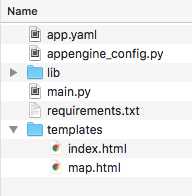
- app.yaml declares where the controlling Flask Python script resides along with the static and templates folder locations
- appengine_config.py points to the lib folder that holds any additional libraries
- requirements.txt holds library names and version to be installed and added to the lib folder
- main.py is the brains of the Flask operations and holds all of the Python code and directives for each HTML pages
Deploying on Google App Engine
And now for the easy part. There are multiple ways of deploying you web application on Google App Engine. In the video (ADD LINK HERE), I show a way to link your GitHub (works with BitBucket as well) using the Google Cloud dashboard. But the easiest, especially if it isn't your repository or if you don't intend uploading back code changes, is to simply using the command line git clone call:```{r eval=FALSE} git clone https://github.com/amunategui/rapid-prototyping-app-engine-yelp ```
So log into your instance of Google Cloud and select the project you want your App Engine to live (if you don't have one see Creating and Managing Projects). Start the cloud shell command line tool by clicking on the upper-right caret button. This will open a familiar-looking command line window in the bottom half of the GCP dashboard.
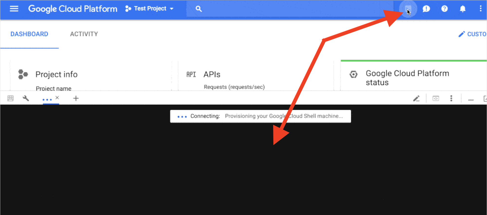
Run the git clone command above and you will see a new directory with the name rapid-prototyping-app-engine-yelp created under your root's directory. You're almost ready to deploy, we just need to add our API keys in three different places. Enter the new folder and open up the main.py file to add the keys:
cd rapid-prototyping-app-engine-yelp
vi main.pyOnce in the vi editor, hit the i key to get in insert mode and scroll down until you find the API variables for both Google and Yelp (highlighted in green in the screenshot).
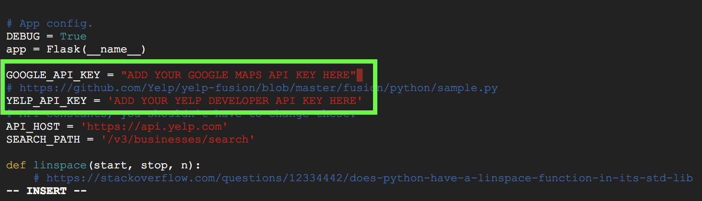
Once you are done, hit the escape key to get out of Insert mode and type :wq to save and quit out of vi (if you want additional vi help check out the Colorado State CS help doc). One more file to fix and we can deploy. Navigate to the templates folder and edit the map.html file:
cd templates
vi map.htmlHit the i key again to get into insert mode and add your Google Key as indicated in the code:
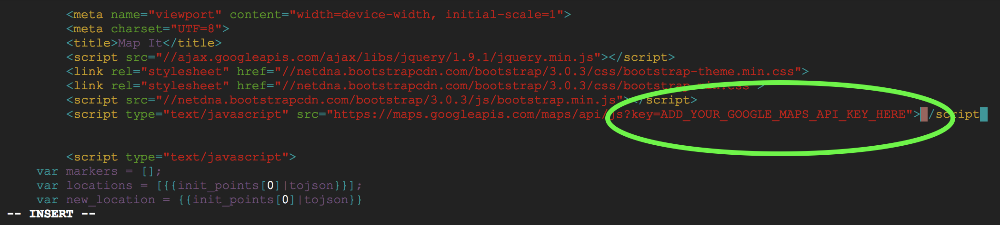
Once again, hit the escape key to get out of Insert mode and type :wq to save and quit out of vi. Navigate back to the rapid-prototyping-app-engine-yelp folder:
cd ..Deploying our Web Application
Almost there, if you look in the requirements.txt file, you will see a series of Python libraries that are required to run the application. When you build your own application, this is where you list all the libraries needed, you then run the script to actually install them the lib folder. A word of caution, the Standard Environment version of the Google App Engine only supports a minimal set of libraries, for anything more complicated (like writing/reading to files) you will need to use the Flexible Environment. So run the following command to install all the needed additional libraries to the lib folder. When you deploy your web app, the lib folder will travel along with the needed libraries.pip install -t lib -r requirements.txtNext initialize gcloud with the following command and answer a series of questions:
gcloud initAnd answer the following questions:
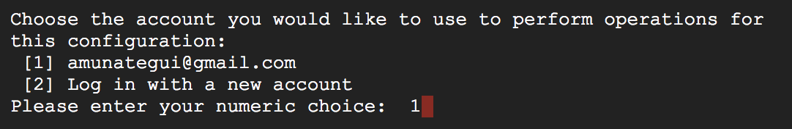
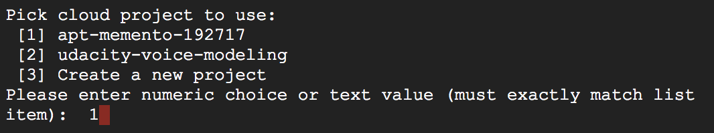
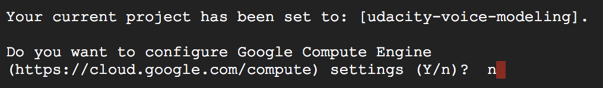
Finally deploy it to the world with the following command:
gcloud app deploy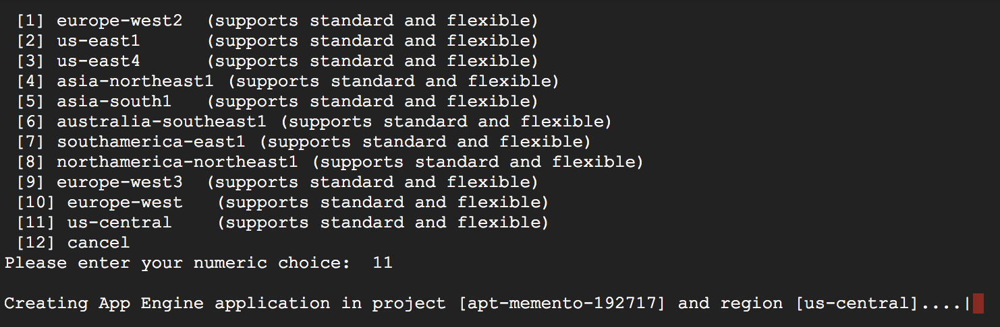
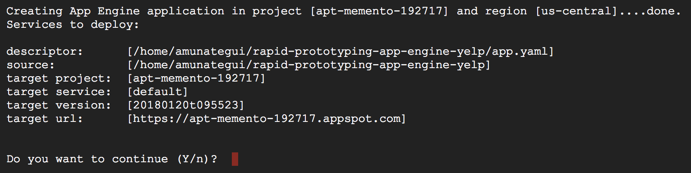
After a few minutes, it will state it is done and offer you the handy command gcloud app browse. If you use it, it will yield a clickable link to jump to your new web application.
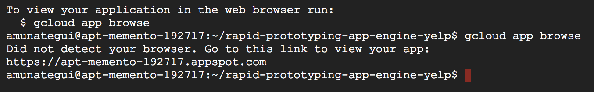
And now for the fun part, let's deploy this to the world!
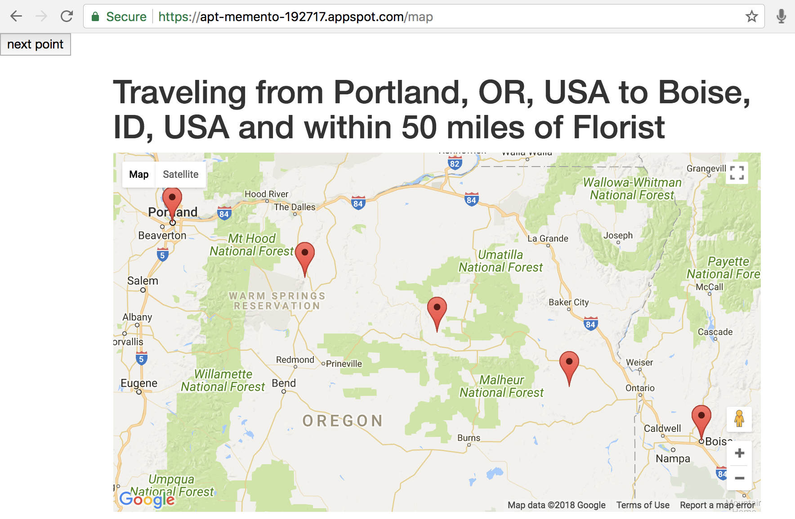